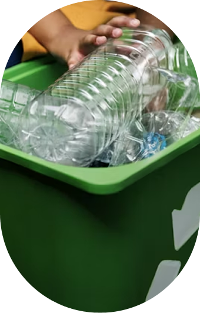
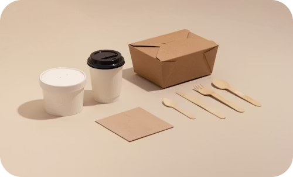
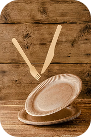
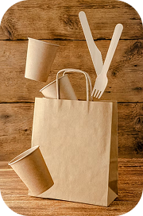

Boas-vindas ao
CicloVerde
Sobre
A CicloVerde é uma pequena organização sustentável que atua no ramo da reciclagem, especializada na produção de copos e diversos utensílios de plástico a partir de materiais reaproveitados. Comprometida com a preservação do meio ambiente, a empresa transforma resíduos plásticos que seriam descartados em produtos úteis, duráveis e de qualidade, contribuindo diretamente para a redução da poluição e do acúmulo de lixo.
Além de seu processo produtivo consciente, a CicloVerde também se preocupa em adotar práticas sustentáveis em todas as etapas de sua operação, desde a coleta e seleção dos materiais até a distribuição dos produtos. A organização valoriza a inovação e investe em tecnologias que aumentam a eficiência da reciclagem, reduzindo o consumo de recursos naturais e de energia.

Canecas e Xícaras.
Canecas de diferentes tipos e tamanhos, feitos com plástico reutilizado.
utensílios.
Utensílios feitos a partir de materiais reciclados com alta qualidade.

